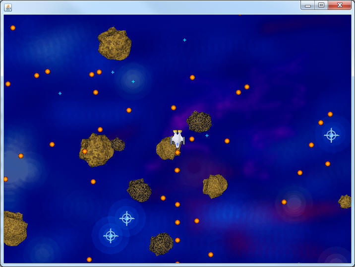

The Bullet Class
"space/bullet.png"
Now that a Ship has been placed on the screen it is time to get some weaponry. Our goal is to be able to press the spacebar and to have a bullet shoot out and last for a specific amount of time before fading out.
Create a class named Bullet that extends AsteroidSprite.
Instance Fields
A Bullet needs a Picture as its instance field, and a double to represent what
speed the bullet should be traveling. Start this at 12 and adjust later to
fit your needs.
Constructor
When the Bullet is created you cannot do as much randomization as was done
previously. Make Bullet's constructor take in three parameters; two
doubles for x and y, and an int for the direction that it's heading.
Set the x,y,width, and height (10 is a decent width/height) using the appropriate inherited methods. A problem occurs when it's time to think about the two vectors, because we only know the angle that we want the bullet to travel. Trigonometry to the rescue! Add the following lines to the constructor, modifying the names tmpAngle and bSpeed to match your parameter and instance field.
double xV = Math.cos(Math.toRadians(tmpAngle));
double yV = -Math.sin(Math.toRadians(tmpAngle));
setXVelocity(bSpeed*xV);
setYVelocity(bSpeed*yV);
This code will set the xVelocity and yVelocity to be the correct speed and direction.
The paintSprite method should be overridden to draw the Picture, similar to how it's been done previously.
Setting up the AsteroidsBoard
The Bullets are going to be set up in a way very similar to how the Asteroids are set up in the AsteroidsBoard. In the instance fields, add an ArrayList<Bullet>, which is then initialized to a new ArrayList<Bullet> in the constructor.
In the paintWindow method, loop through and tell every Bullet to paintSelf
In the onTimerTick method, loop through and tell every Bullet to update.
So far we've got the paint and onTimerTick method looping through lists of empty bullets. Bullets should be added when the spacebar is pressed. Go to the onKeyPress method, and if the keyCode is 32 construct a new Bullet and add it to the list. The three parameters should come directly from the ship (myShip.getX(), etc.). You may access the ship's direction using the getRotation method (they are the same for the ship).
Compile and run the program. Hit the spacebar a few times and hopefully some Bullets will go flying around.

Giving the Bullets a lifespan
You may have noticed a little problem. Your Bullets are immortal and the screen is soon filled with them. It's time to add a way for the Bullets to die of old age, which will clean this up a bit.
Add two instance fields to Bullet: an int for counting and an int to represent the maximum count before the Bullet should disappear (30 is a good start).
Override the update method to increment the counter and call super.update().
Add a method named isTooOld, which returns true if the count has passed the maximum.
In the AsteroidsBoard class:
Create a method named removeOldBullets, which will loop through all the Bullets and remove them from the list if they're too old. Once this method is complete, make sure to call it from the onTimerTick method or it will never happen.
Run the program again. Hopefully this time the Bullets will only last for a while.